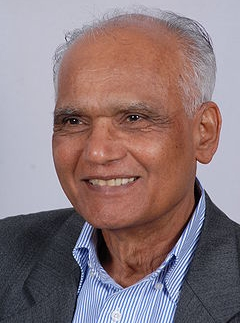

ಖ್ಯಾತ ಕಾದಂಬರಿಕಾರ ಎಸ್.ಎಲ್.ಭೈರಪ್ಪ ಅವರಿಗೆ ಸರಸ್ವತಿ ಸಮ್ಮಾನ್ ಪ್ರಶಸ್ತಿಯ ಗರಿ
ಕನ್ನಡ ಸಾರಸ್ವತ ಲೋಕದ ಖ್ಯಾತ ಕಾದಂಬರಿಕಾರ ಎಸ್.ಎಲ್.ಭೈರಪ್ಪ ಅವರಿಗೆ ಕೆ.ಕೆ.ಬಿರ್ಲಾ ಪ್ರತಿಷ್ಠಾನದ ಪ್ರತಿಷ್ಠಿತ ಸರಸ್ವತಿ ಸಮ್ಮಾನ್ ಪ್ರಶಸ್ತಿಯನ್ನು ನವಂಬರ್ ೧೬, ಬುಧವಾರ ಸಂಜೆ ಪ್ರದಾನ ಮಾಡಿ ಸನ್ಮಾನಿಸಲಾಯಿತು. 2010ನೇ ಸಾಲಿನ ಸರಸ್ವತಿ ಸಮ್ಮಾನ್ ಪ್ರಶಸ್ತಿಗೆ ಭೈರಪ್ಪನವರ ಮಂದ್ರ ಕಾದಂಬರಿ ಆಯ್ಕೆಯಾಗಿತ್ತು. ಕನ್ನಡದವರಿಗೆ ಇದೇ ಮೊದಲ ಬಾರಿಗೆ ಈ ಪ್ರಶಸ್ತಿಯ ಸೌಭಾಗ್ಯ ಸಿಕ್ಕಿದೆ. ಭಾರತೀಯ ಸಾಂಸ್ಕೃತಿಕ ಸಂಬಂಧಗಳ ಪರಿಷತ್ ಅಧ್ಯಕ್ಷ ಡಾ.ಕರಣ್ ಸಿಂಗ್ ಪ್ರಶಸ್ತಿ ಪ್ರದಾನ ಮಾಡಿದರು. ಈ ಪ್ರಶಸ್ತಿ 7.50 ಲಕ್ಷ ರೂಪಾಯಿ ನಗದು ಹಾಗೂ ಪ್ರಶಸ್ತಿ ಫಲಕವನ್ನು ಒಳಗೊಂಡಿದೆ.
ಪ್ರಶಸ್ತಿ ಸ್ವೀಕರಿಸಿ ಮಾತನಾಡಿದ ಅವರು, ನನ್ನ ಸಾಹಿತ್ಯದ ಬೆನ್ನುಲುಬಾದ ಓದುಗರಿಗೆ ಚಿರಋಣಿಯಾಗಿರುವುದಾಗಿ ಹೇಳಿದರು. ತಾನು ಚಿಕ್ಕಂದಿನಲ್ಲಿಯೇ ಕಡು ಬಡತನದಲ್ಲಿಯೇ ಬೆಳೆದು ಬಂದ ಹಾದಿಯ ದಿನಗಳನ್ನು ಸಮಾರಂಭದಲ್ಲಿ ನೆನಪಿಸಿಕೊಂಡರು. ಬಡತನದಲ್ಲಿ ಹುಟ್ಟಿದ ನನಗೆ ಓದುವಾಗ ವಾರಾನ್ನವೇ ಆಧಾರವಾಗಿತ್ತು. ಪ್ಲೇಗ್, ಕಾಲರಾ ರೋಗಕ್ಕೆ ಎರಡು ಗಂಟೆ ಅಂತರದಲ್ಲಿಯೇ ನನ್ನ ಸಹೋದರ, ಸಹೋದರಿಯನ್ನು ಕಳೆದುಕೊಂಡಾಗ ಸಾವು ಎಂದರೇನು ಎನ್ನುವ ಪ್ರಶ್ನೆ ನನ್ನನ್ನು ಕಾಡಿತ್ತು. ನನ್ನ ಜೀವನದ ಅನುಭವವೇ ನನ್ನಲ್ಲಿ ಸಾವಿನ ಅರ್ಥದ ಹುಡುಕಾಟಕ್ಕೆ ಶುರು ಮಾಡಿದೆ ಎಂದು ನೆನಪಿಸಿಕೊಂಡರು.
ರಾಷ್ಟ್ರದ ಜೀವನಾದರ್ಶಗಳಿಗೆ ಮೂರ್ತ ಸ್ವರೂಪ ಕೊಟ್ಟಿದ್ದು ರಾಮಾಯಣ ಮತ್ತು ಮಹಾಭಾರತ ಎಂದರು. ನನ್ನ ಮೊದಲ ಆಸಕ್ತಿ ಸಂಗೀತ. ಆನಂತರದ್ದು ಸಾಹಿತ್ಯ. ಇದರ ಪರಿಣಾಮವೇ ಮಂದ್ರ ಕಾದಂಬರಿ. ಸರಸ್ವತಿ ಸಮ್ಮಾನಕ್ಕೆ ಇದೇ ಕಾದಂಬರಿಯನ್ನು ಆಯ್ಕೆ ಮಾಡಿರುವುದು ಸಂತಸ ತಂದಿದೆ. ಒಬ್ಬ ಸಂಗೀತಗಾರ, ಅವನ ಸುತ್ತಮುತ್ತಲ ಘಟನೆ-ಪಾತ್ರಗಳ ಮೂಲಕ ಕಲೆಗೂ ಜೀವನದ ಇತರ ಮೌಲ್ಯಗಳಿಗೂ ಇರುವ ಸಂಬಂಧವನ್ನು ಈ ಕಾದಂಬರಿಯಲ್ಲಿ ಅನ್ವೇಷಿಸಿದ್ದೇನೆ. ಇಡೀ ಕಾದಂಬರಿಯಲ್ಲಿ ಸಂಗೀತದ್ದೇ ಮುಖ್ಯ ಪಾತ್ರ ಎಂದು ವಿವರಿಸಿದರು.